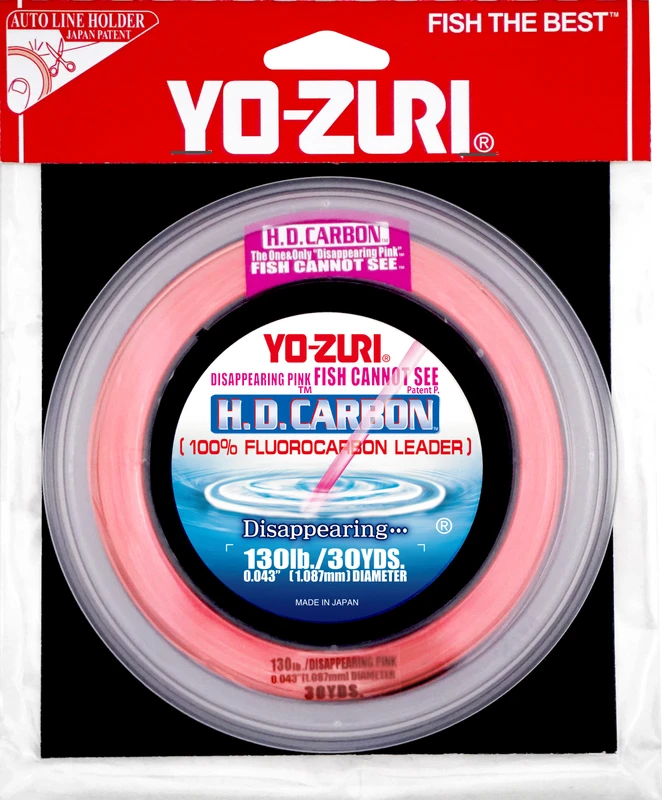

Yo-Zuri H.D. Carbon Leader
Leader diameter chart & setup guide

H.D. Carbon is Yo-Zuri's dedicated fluorocarbon leader family. Clear and Disappearing Pink have different available strength and package ranges. Pink also has explicitly listed bulk lengths; the family name does not make all options universal.
- Construction
- 100% fluorocarbon leader; Clear and Disappearing Pink are separate color/SKU ranges
- Listed strengths
- 2-200 lb
- Role
- Terminal leader
Is H.D. Carbon Leader right for your setup?
This is a bite-section material to compare for fresh- or saltwater rigs, with much heavier sizes available than a typical freshwater mainline. Pick the diameter and connection for the intended contact surfaces and fish. Treat Disappearing Pink as a named color and manufacturer positioning, not a promise that it vanishes under all water and light conditions.
Choose your Yo-Zuri H.D. Carbon Leader
A package supplies multiple leaders
The package length is the amount you buy, not the leader length to attach to one rig. Allow extra line for knots, tag ends, trimming, and replacing damaged sections.
Amazon links may earn ReelCalc a commission. Check the exact strength, length, and product version before buying.
Yo-Zuri H.D. Carbon Leader diameter chart
Only the source-reviewed strengths and package combinations listed below are included. Converted measurements are identified in the source notes.
| Strength | Inches | mm | Package length |
|---|---|---|---|
| 0.005 | 0.123 | 30 yd | |
| 0.007 | 0.173 | 30 yd | |
| 0.008 | 0.215 | 30 yd | |
| 0.01 | 0.253 | 30 yd | |
| 0.011 | 0.275 | 30 yd | |
| 0.012 | 0.297 | 30 yd | |
| 0.013 | 0.331 | 30 yd, 100 yd | |
| 0.015 | 0.38 | 30 yd, 100 yd, 500 yd | |
| 0.018 | 0.457 | 30 yd, 100 yd, 500 yd | |
| 0.019 | 0.488 | 30 yd, 100 yd, 500 yd | |
| 0.024 | 0.602 | 30 yd, 100 yd, 500 yd | |
| 0.025 | 0.645 | 30 yd, 100 yd, 500 yd | |
| 0.029 | 0.747 | 30 yd, 100 yd, 500 yd | |
| 0.033 | 0.847 | 30 yd, 100 yd, 250 yd | |
| 0.038 | 0.953 | 30 yd, 100 yd | |
| 0.043 | 1.087 | 30 yd, 100 yd | |
| 0.048 | 1.215 | 30 yd, 100 yd | |
| 0.061 | 1.545 | 30 yd, 100 yd |
Choosing and using H.D. Carbon Leader
The 2, 4 and 6 lb source rows are Disappearing Pink, not Clear. Preserve that distinction when choosing or buying a light leader.
Clear 100-yard packages cover 20-80 lb; Pink 100-yard packages cover a broader but explicitly listed range beginning at 15 lb. Select the exact color and SKU.
The Pink bulk page lists 500 yards at 20-60 lb and 250 yards at 80 lb. The 300 lb/30 yd diameter pair conflicts at the published precision and is withheld.
Specification-based guidance, not a ReelCalc hands-on performance test. Capacity results are estimates, not measured fills.
Track color and package together
Keep the Clear or Disappearing Pink code with the leader strength. Do not assume a package offered in Pink can be bought in Clear.
Use bulk for a known leader workload
A 250- or 500-yard leader spool supplies replacement sections. Estimate usage from finished leader lengths plus tying and trimming, not from the reel's mainline capacity.
Inspect connections and contact wear
Check the leader after contact with structure, fish and handling. Replace damaged sections and test a newly tied connection before fishing.
Plan the line on your reel separately
A short terminal leader is not the working line that fills your spool. Use the actual main line in the calculator or Setup Wizard. A long topshot that occupies substantial spool space needs its own capacity plan.
H.D. Carbon Leader questions, answered
Are Clear and Pink offered in the same strengths?
No. The official pages list different light-strength and long-package ranges. Each verified package in this pack retains its color.
Is the 80 lb bulk spool 500 yards?
The official bulk table lists 80 lb Disappearing Pink at 250 yards, while its 20-60 lb rows are 500 yards.
Does the brand's historical record claim verify my rig?
No. A marketing record anecdote is not a strength guarantee for your line, knots, rod or reel; it is not used to establish the numeric rows here.
Why is the 300 lb row not calculator-ready?
Its printed 1.885 mm/0.075 inch values conflict beyond normal combined rounding at the displayed precision. The raw row is retained pending clarification.
Can I use leader diameter to calculate the braid fill?
No. Keep the reel calculation on the mainline and plan H.D. Carbon consumption as leader sections.
Specifications & sources
Official sources retrieved September 13, 2026. Both inch and millimeter values are published independently and retained within rounding tolerance. Separate Clear, Disappearing Pink and Pink bulk tables retained with SKU context. 300 lb Pink 1.885 mm/0.075 in withheld for numerical conflict. No color or package range is inferred from another color. Package options are not a stock or price guarantee.
- Official Yo-Zuri specification source Exact numeric rows, package identity and model positioning. Saved source evidence is retained in the Group B research pack.
- Official Yo-Zuri specification source Exact numeric rows, package identity and model positioning. Saved source evidence is retained in the Group B research pack.
- Official Yo-Zuri specification source Exact numeric rows, package identity and model positioning. Saved source evidence is retained in the Group B research pack.